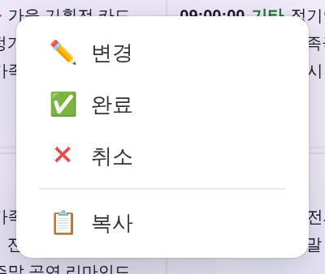
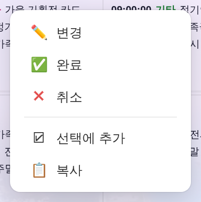
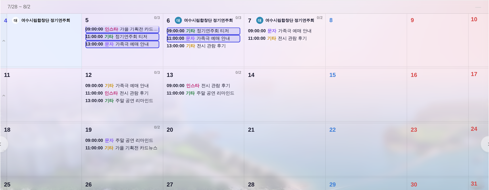
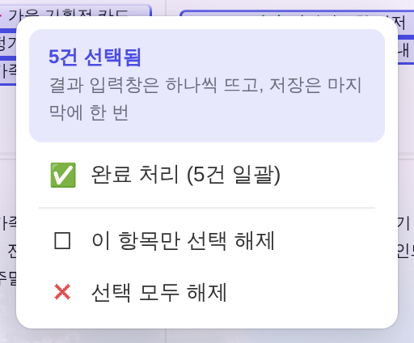
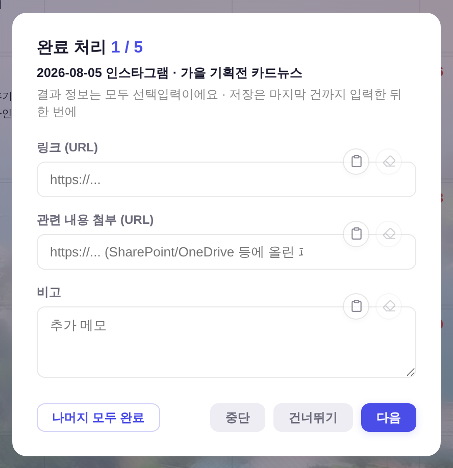
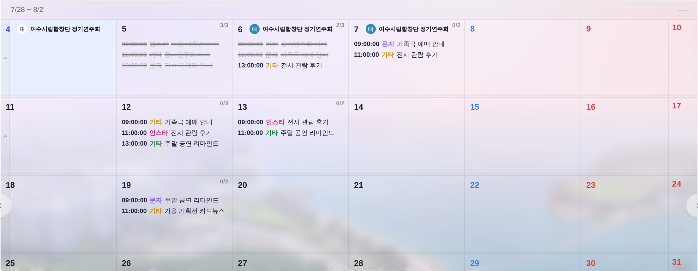

지시(운영자): 「관리자 계정에서 캘린더에 있는 블록들을 선택해서 우클릭 (메뉴) 완료로 일괄 완료 처리하는 기능도 넣어줄래? 뒤에 창 뜨는 건 순차적으로 뜨더라도 명령은 한번에 할 수 있게.」
아래 스냅샷은 정본 하네스(tools/smoke_layout.mjs)와 같은 방식으로 ?qa=admin 목데이터를 1500×900 헤드리스에 띄워 찍은 것 —
실API·실데이터 미접촉. 「전」은 git show HEAD:index.html을 그대로 서빙해 같은 시나리오를 두 판본에서 돌렸다.
구 경로는 블록 하나가 단위였다: 우클릭 → [완료] → 결과창 → PATCH → syncReload(시트 재조회) → 전체 render().
하루 10건이면 이 왕복을 10번 돈다. 결과 입력이 10번 필요한 건 어쩔 수 없지만(건마다 링크·첨부·비고가 다르다),
재조회와 재그리기까지 10번 도는 건 순전히 경로가 건 단위라서 생기는 비용이다.


선택을 안 쓰는 평소에는 메뉴 한 줄만 늘고 나머지는 전부 그대로다. 캘린더 자체도 선택이 0건이면
전/후 스냅샷이 픽셀 단위로 동일(before_calendar.png ≡ after_calendar.png, md5 일치) = 회귀 0.
.c.sel의 문법을 그대로 계승(inset accent 링 + accent 틴트)
#update-badge)와 같은 알약 기하, 버튼은 정본 .btn

구 adminCompleteWithResult 안에 박혀 있던 모달을 공용 _completeResultPrompt로 뽑았다 — 단건·일괄이 같은 창을 쓴다.
입력칸 3종·문구는 그대로 두고, 일괄일 때만 제목의 N / M·대상 한 줄·[건너뛰기]·[나머지 모두 완료]가 붙는다.
단건 창은 전과 같은 3칸·같은 문구로 남는다(위 왼쪽/아래 비교 — 버튼만 정본 .btn으로 교체).
같은 하네스에서 5건을 처리시키고 /api/records GET(=시트 재조회) 호출을 셌다.
시트 왕복 지연은 GET 220ms · PATCH 260ms로 흉내(보수적 하한). 「전」은 git show origin/main:index.html(= 이 브랜치의 base).
| 경로 | PATCH | 재조회(GET) | 벽시계 (회차) |
|---|---|---|---|
| 전(origin/main) — 단건 5회 | 5 | 5 | 5,567ms |
| 후 — 단건 5회 (회귀 확인) | 5 | 5 | 5,441 / 5,603 / 6,105ms |
| 후 — 일괄 5건 | 5 | 1 | 3,344 / 3,523 / 3,527ms |
단건 경로는 전/후가 같은 수치(재조회 5 · 5.4~6.1s 대역) = 종전 경로 무변.
일괄은 재조회 5→1. 벽시계는 스크립트 입력 시간이 섞여 회차 편차가 ±10% 있어 단정할 값은 재조회 횟수고,
시간은 「같은 조건에서 5.5s대 → 3.4s대」 정도로 읽으면 된다.
PATCH 자체는 건마다 필요하므로 줄지 않는다 — 줄이려면 Worker에 일괄 엔드포인트를 새로 파야 하는데 이번 지시 범위 밖이라 안 건드렸다(§7).
0/3 → 3/3, 0/3 → 2/3로 갱신
.mon-sub 안의 .mev)이다.
그 .mev에는 항목 우클릭 핸들러가 없었다 → 우클릭이 부모 셀로 새어 「새 콘텐츠 등록」 셀 메뉴가 떴고,
결과적으로 월요일 건만 캘린더에서 완료 처리할 방법이 없었다(신청 목록으로 돌아가야 했다).
다중선택을 붙이며 같은 계약(data-ri + onEvContextMenu)을 .mev에도 부착해 월요일도 단건·일괄 둘 다 된다.| 요소 | 계승한 정본 | 새로 만든 것 |
|---|---|---|
| 선택 링 | 셀 선택 .c.sel의 문법 — inset --accent 링 + --accent-glow 틴트 | 0 |
| 선택 바 | 갱신 뱃지 #update-badge의 알약 기하 + --accent/--surface-solid/--elev | 0 |
| 일괄 메뉴 머리 | --accent-light 블록 + --accent/--neutral-text (관리자 패널 카드와 같은 문법) | 0 |
| 결과창 버튼 | 정본 .btn 3종(--primary/--neutral/--ghost) — 구 인라인 스타일 버튼 폐기 | 0 |
공용화하면서 구 모달 안의 인라인 리터럴을 토큰으로 갈아끼운 결과 raw hex 총량이 12 줄었다
(#fff·#888·#555×3·#eee×3·#f5f5f5·#666·rgba(0,0,0,0.4)
→ --surface-solid·--dim·--neutral-text·--border·--backdrop).
게이트 baseline을 1590 → 1578로 내리고 사유를 tools/check_design.py에 주석으로 남겼다. 신규 반입은 0.
src/index.js에 다건 PATCH를 새로 파야 하는데,
이번 지시는 화면 조작(선택·명령·창)에 관한 것이라 Worker는 손대지 않았다. 필요하면 별건으로.onEvDragStart)에 배정돼 있어 같은 제스처를 겹치면 충돌한다._evSel 하나만 읽으면 되게 열어뒀다.헤드리스 회귀 19/19 PASS — 단건 회귀 3 · 선택 동작 6(신청중 제외·Esc·평클릭·달 이동 정리 포함) ·
월요일 서브셀 3 · 중단/건너뛰기 3 · 핵심 경로 3(값 건별 정확·재조회 1회·화면 반영) · 일반 사용자 무간섭 1.
게이트: check_design 1578/1578 ✓ · check_wiring ✓ · check_refs ✓ · 메인 스크립트 node --check ✓.